器材库 > APS及其以下画幅可换镜头数码相机 > EOS 800D / EOS Kiss X9i
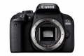
规格总览
产品类型
APS画幅可换镜头数码相机
日本地区型号
EOS Kiss X9i
发布日期
2017-02-15
影像规格
影像传感器
CMOS
影像传感器尺寸
22.3×14.9mm
有效像素
2420万
影像处理器
DIGIC 7
静态图像格式
JPEG, RAW, RAW+JPEG
静态图像尺寸
L（大）：2400万像素（6000×4000） M（中）：约1060万像素（3984×2656） S1（小1）：约590万像素（2976×1984） S2（小2）：约380万像素（2400×1600） RAW：2400万像素（6000×4000）
画幅比
3:2, 4:3, 16:9, 1:1
短片格式
MPEG4-AVC/H.264
短片尺寸
1920×1080（全高清）：59.94p/50p/29.97p/25p/23.98p 1280×720（高清）：59.94p/50p/29.97p/25p 640×480（标清）：29.97p/25p
音频格式
AAC
除尘系统
自动、手动、添加除尘数据
镜头和对焦
镜头卡口
Canon EF
兼容镜头
佳能EF系列镜头（包括EF-S、不包括EF-M镜头）
对焦系统类型
TTL辅助影像重合，使用专用自动对焦感应器的相差检测
对焦点
45点（最多45个十字型自动对焦点）
对焦模式
单次自动对焦、人工智能伺服自动对焦、人工智能自动对焦、手动对焦
AF辅助灯/光
有
手动对焦
支持
曝光控制
测光系统
使用7560像素 RGB+红外 测光感应器、63区TTL全开光圈测光
测光模式
评价测光, 点测光, 局部测光, 中央重点平均测光
测光范围
1EV~20EV
曝光模式
程序自动曝光、快门优先自动曝光、光圈优先自动曝光、手动曝光
拍摄模式
单拍、高速连拍、低速连拍、10秒自拍/遥控、2秒自拍、10秒后连拍
场景模式
合影、儿童、食物、烛光、夜景人像、手持夜景、HDR逆光控制
创意滤镜
颗粒黑白、柔焦、鱼眼效果、水彩画效果、玩具相机效果、微缩景观效果、HDR标准绘画风格、HDR浓艳绘画风格、HDR油画风格、HDR浮雕画风格
快门类型
电子控制焦平面快门
快门速度
1/4000至30秒（总快门速度范围。可用范围随拍摄模式各异。）、B门
闪光同步速度
1/200秒
曝光补偿
±5EV以1/3或1/2EV级调整
自动曝光锁
有
自动包围曝光
在±2级间以1/3或1/2级为单位调节
ISO感光度
基本拍摄区模式：ISO感光度自动设置 创意拍摄区模式（P,Tv,Av,M,B）：自动ISO、在ISO 100～25600之间手动设置（以1级为单位）、或ISO感光度扩展到“H”（相当于ISO 51200）
白平衡
自动（氛围优先)、自动（白色优先)、预设（日光、阴影、阴天、钨丝灯、白色荧光灯、闪光灯）具备白平衡校正和白平衡包围曝光
连拍
高速连拍：最高约6张/秒低速连拍：最高约3张/秒
闪光灯
内置闪光灯
弹出式
闪光模式
E-TTL II自动闪光
闪光指数
约12（ISO 100，以米为单位）
闪光补偿
±2EV以1/3或1/2EV级调整
外接闪光灯
兼容EX系列闪光灯
取景器/显示屏
取景器
眼平五面镜
取景范围
95%
取景放大倍率
0.82倍
屈光度调节范围
约-3.0～+1.0 m-1（dpt）
对焦屏
固定式，精度磨砂
反光镜
快回型
LCD类型
彩色TFT LCD
LCD尺寸
3.0英寸
LCD像素
104万
LCD特性
触摸屏, 翻转屏
亮度调节级数
手动（7级）
Live View
有
Live View 对焦模式
面部＋追踪、平滑区域自动对焦、实时1点自动对焦手动对焦（可进行约5倍、10倍放大确认）※支持触摸自动对焦
文件输入/输出
存储卡
SD/SDHC, SDXC
数据接口
高速USB
视频/音频接口
C型HDMI接口
无线功能
Wi-Fi, NFC, 蓝牙
电源
电池
可充电锂电池LP-E17（1块）
续航能力
使用取景器拍摄：常温（23℃）时约600张、低温（0℃）时约550张 使用实时显示拍摄：常温（23℃）时约270张、低温（0℃）时约230张
机身规格
颜色
黑色
尺寸
131×99.9×76.2mm
重量
仅机身约485g / 含电池和存储卡约532g
其它
配件端口
遥控线, 麦克风输入端子
工作温度
0 - 40℃
工作湿度
85%
附件
电池充电器 LC-E17C（含电源线），锂电池 LP-E17，相机宽背带 EW-400D
该产品暂无存档的网友点评
产品图 / 样片
EOS 800D
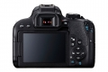
EOS 800D
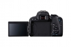
EOS 800D
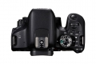
EOS 800D
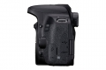
EOS 800D
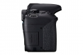
EOS 800D
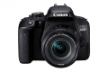
EOS 800D
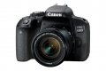
EOS 800D
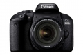
EOS 800D
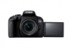
EOS 800D
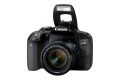
EOS 800D
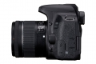
EOS 800D
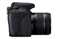
EOS 800D
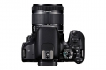
EOS 800D
评测 / 相关文章
- 详细内容 （存档）
- 双子星横空出世 佳能EOS77D/800D评测 （存档）
- ［试用］佳能EOS77D EOS800D实拍样张 （存档）
- ［资讯］佳能EOS 800D/77D图赏+实拍 （存档）
- ［行情］佳能77D 800D上市开售 （存档）
- ［资讯］CP+2017独家报道 各家新货逐个品（上） （存档）
- ［资讯］佳能三机一镜新品暗藏什么杀机 （存档）
- ［资讯］佳能入门单反EOS 800D官方样片欣赏 （存档）